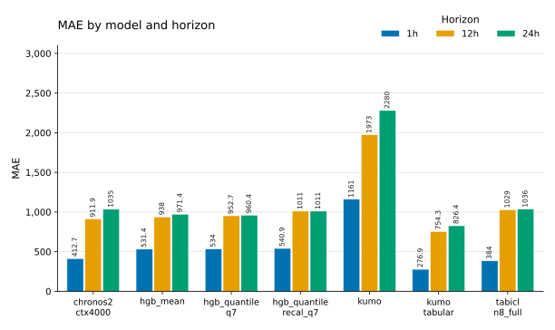
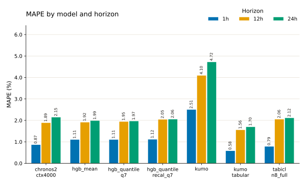
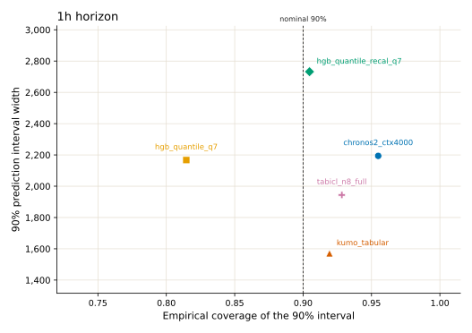
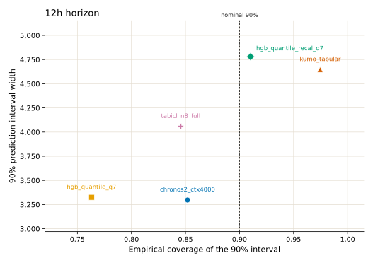
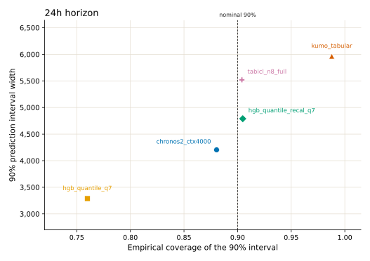
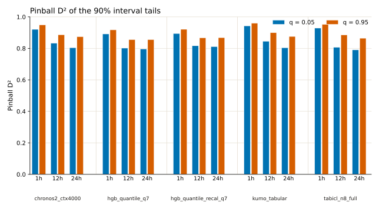

Walk-forward CV metric plots
These figures restate the pooled metrics from the walk-forward CV comparison. Each number pools every row across the 8 CV folds. MAE and MAPE use the median prediction where the model has quantiles. Coverage, interval width, and pinball D² use the published quantiles. hgb_mean and kumo have no quantiles in that table, so they appear only in the point-error plots.
The plots show the 1h, 12h, and 24h horizons. The source table also reports an average slice; those values are in the tables below.
Source revision
The published table was revised on 2026-11-02. Compared with the earlier snapshot (2026-10-30), these values changed:
kumo_tabularpoint metrics (MAE, MAPE), 90% coverage, and 90% interval width, at every horizon.- Pinball D² at q = 0.05 and q = 0.95 for every quantile model (
chronos2_ctx4000,hgb_quantile_q7,hgb_quantile_recal_q7,kumo_tabular,tabicl_n8_full), at every horizon. - Pinball D² at q = 0.5 for
kumo_tabularonly.
The MAE, MAPE, coverage, and width of the other four quantile models did not change. Neither did the median D² of those models. The revision does not say why the tail D² values moved. The figures and tables here use the 2026-11-02 values. The earlier values are in the git history of data/cv_metrics.json.
MAE and interval width are in the load units of the source table. The MAPE figure shows percent; the tables keep the source fractions.
Point error
kumo_tabular has the lowest MAE and MAPE at 1h, 12h, and 24h. At 1h its MAE is 276.9, ahead of tabicl_n8_full (384) and chronos2_ctx4000 (412.7). The three histogram gradient boosting models sit together at 1h (531.4 to 540.9). kumo is about four times that, at 1161.
At 12h kumo_tabular is at 754.3, and the next model is chronos2_ctx4000 at 911.9. At 24h its MAE is 826.4, then hgb_quantile_q7 at 960.4, hgb_mean at 971.4, and hgb_quantile_recal_q7 at 1011. chronos2_ctx4000 (1035) and tabicl_n8_full (1036) are next to each other. kumo is 2280.
Recalibrating the quantile model raises MAE at every horizon: hgb_quantile_recal_q7 versus hgb_quantile_q7 is 540.9 versus 534 at 1h, 1011 versus 952.7 at 12h, and 1011 versus 960.4 at 24h.
MAPE orders the models the same way as MAE at 1h and 12h. At 24h chronos2_ctx4000 and tabicl_n8_full swap places: tabicl_n8_full has the lower MAPE (2.12% versus 2.15%), while chronos2_ctx4000 has the lower MAE (1035 versus 1036).


MAE
| model | 1h | 12h | 24h | average |
|---|---|---|---|---|
| chronos2_ctx4000 | 412.7 | 911.9 | 1035 | 786.6 |
| hgb_mean | 531.4 | 938 | 971.4 | 813.6 |
| hgb_quantile_q7 | 534 | 952.7 | 960.4 | 815.7 |
| hgb_quantile_recal_q7 | 540.9 | 1011 | 1011 | 854.2 |
| kumo | 1161 | 1973 | 2280 | 1805 |
| kumo_tabular | 276.9 | 754.3 | 826.4 | 619.2 |
| tabicl_n8_full | 384 | 1029 | 1036 | 816.2 |
MAPE
| model | 1h | 12h | 24h | average |
|---|---|---|---|---|
| chronos2_ctx4000 | 0.008655 | 0.01892 | 0.02148 | 0.01635 |
| hgb_mean | 0.01107 | 0.01917 | 0.01993 | 0.01672 |
| hgb_quantile_q7 | 0.01108 | 0.01948 | 0.01971 | 0.01676 |
| hgb_quantile_recal_q7 | 0.01119 | 0.02046 | 0.0206 | 0.01742 |
| kumo | 0.02506 | 0.04098 | 0.04723 | 0.03776 |
| kumo_tabular | 0.00582 | 0.0156 | 0.01702 | 0.01281 |
| tabicl_n8_full | 0.007879 | 0.02057 | 0.02117 | 0.01654 |
Interval width and coverage
On these plots a calibrated sharp 90% interval sits on the dashed line and low on the width axis. Each panel has its own width scale, because interval width grows with the horizon.
At 1h, kumo_tabular has the narrowest interval (1571) and slightly overcovers (0.919). tabicl_n8_full overcovers a bit more (0.928) at width 1944. hgb_quantile_q7 undercovers (0.815) at a width close to Chronos-2 (2167 versus 2194). Recalibration moves that model to 0.905 and widens the interval to 2732. Chronos-2 overcovers (0.955) at width 2194.
At 12h, chronos2_ctx4000 and hgb_quantile_q7 have the narrowest intervals (3297 and 3325), and both undercover (0.852 and 0.763). tabicl_n8_full undercovers as well (0.846) at width 4059. Recalibration reaches 0.910 at width 4780. kumo_tabular overcovers (0.975) at width 4647.
At 24h, hgb_quantile_q7 is again the narrowest (3288) and the furthest under the nominal coverage (0.760). Chronos-2 is closer to the line (0.880) at width 4204. Recalibration lands on 0.905 at width 4789, and tabicl_n8_full is on the nominal coverage (0.904) at width 5519. kumo_tabular overcovers (0.988) with the widest interval (5964).



Coverage of the 90% interval
| model | 1h | 12h | 24h | average |
|---|---|---|---|---|
| chronos2_ctx4000 | 0.9549 | 0.8519 | 0.8804 | 0.8957 |
| hgb_quantile_q7 | 0.8146 | 0.7631 | 0.7599 | 0.7792 |
| hgb_quantile_recal_q7 | 0.9047 | 0.9102 | 0.9048 | 0.9066 |
| kumo_tabular | 0.9193 | 0.9746 | 0.9878 | 0.9606 |
| tabicl_n8_full | 0.9283 | 0.8456 | 0.904 | 0.8927 |
Width of the 90% interval
| model | 1h | 12h | 24h | average |
|---|---|---|---|---|
| chronos2_ctx4000 | 2194 | 3297 | 4204 | 3232 |
| hgb_quantile_q7 | 2167 | 3325 | 3288 | 2926 |
| hgb_quantile_recal_q7 | 2732 | 4780 | 4789 | 4100 |
| kumo_tabular | 1571 | 4647 | 5964 | 4061 |
| tabicl_n8_full | 1944 | 4059 | 5519 | 3841 |
Pinball D² of the 90% interval
Pinball D² at q = 0.05 and q = 0.95 scores the two tails that bound the 90% interval. Higher is better. Bars are grouped by model, then by horizon, then by that quantile pair. The median quantile (q = 0.5) is a point-forecast score; its values are in the table and are left off the figure.
At 1h, kumo_tabular leads both tails (0.943 and 0.960), ahead of tabicl_n8_full (0.929 and 0.952) and chronos2_ctx4000 (0.921 and 0.949). At 12h, kumo_tabular also leads both tails (0.845 and 0.899), ahead of hgb_quantile_recal_q7 (0.817 and 0.867) and chronos2_ctx4000 (0.832 and 0.887). At 24h the models are close. hgb_quantile_recal_q7 has the highest q = 0.05 score (0.811). On q = 0.95, kumo_tabular (0.876), chronos2_ctx4000 (0.874), and hgb_quantile_recal_q7 (0.868) are within 0.01 of each other.
hgb_quantile_recal_q7 scores above hgb_quantile_q7 on both tails at every horizon, by 0.003 to 0.015. This is the reverse of the earlier snapshot, where recalibration lowered the tail D².
The tail D² of the other four quantile models rose by 0.02 to 0.19 at 1h, 12h, and 24h in the revision, while their median D² stayed the same. See the source revision section above.

Tail pinball D² (q = 0.05 and q = 0.95)
| model | 1h 0.05 | 1h 0.95 | 12h 0.05 | 12h 0.95 | 24h 0.05 | 24h 0.95 | avg 0.05 | avg 0.95 |
|---|---|---|---|---|---|---|---|---|
| chronos2_ctx4000 | 0.9206 | 0.9488 | 0.8324 | 0.8865 | 0.8039 | 0.8738 | 0.8523 | 0.903 |
| hgb_quantile_q7 | 0.8913 | 0.9173 | 0.8015 | 0.8551 | 0.7956 | 0.8553 | 0.8295 | 0.8759 |
| hgb_quantile_recal_q7 | 0.8943 | 0.9209 | 0.8165 | 0.8666 | 0.8107 | 0.8681 | 0.8405 | 0.8852 |
| kumo_tabular | 0.9427 | 0.9596 | 0.8451 | 0.8992 | 0.8036 | 0.8756 | 0.8638 | 0.9115 |
| tabicl_n8_full | 0.9285 | 0.9522 | 0.8061 | 0.885 | 0.7902 | 0.8645 | 0.8416 | 0.9006 |
Median pinball D² (q = 0.5)
| model | 1h | 12h | 24h | average |
|---|---|---|---|---|
| chronos2_ctx4000 | 0.9487 | 0.8866 | 0.8712 | 0.9021 |
| hgb_quantile_q7 | 0.9336 | 0.8815 | 0.8805 | 0.8985 |
| hgb_quantile_recal_q7 | 0.9327 | 0.8743 | 0.8742 | 0.8937 |
| kumo_tabular | 0.9655 | 0.9062 | 0.8972 | 0.923 |
| tabicl_n8_full | 0.9522 | 0.8721 | 0.8711 | 0.8985 |
Reading the three views together
kumo_tabular is the best point forecast at every horizon and has the best average tail D² on both quantiles. Its 1h interval is the narrowest of the five quantile models, and it leads the tail D² at 1h and 12h. Its intervals overcover at 12h and 24h, and at 24h it has the widest band.
hgb_quantile_recal_q7 is the model whose coverage stays near 0.90 at 12h and 24h. Relative to hgb_quantile_q7, recalibration costs point accuracy (higher MAE and median D²) and widens the interval, and it improves tail D² and coverage.
chronos2_ctx4000 overcovers at 1h (0.955), undercovers at 12h and 24h (0.852 and 0.880), and has a 1h tail D² in the top three. Its 24h coverage sits below the nominal level.
Reproduce
From electricity_load_cv_plots, with pixi:
pixi run plotThe script reads data/cv_metrics.json, which was copied from the published table, and writes the SVG figures next to this report.